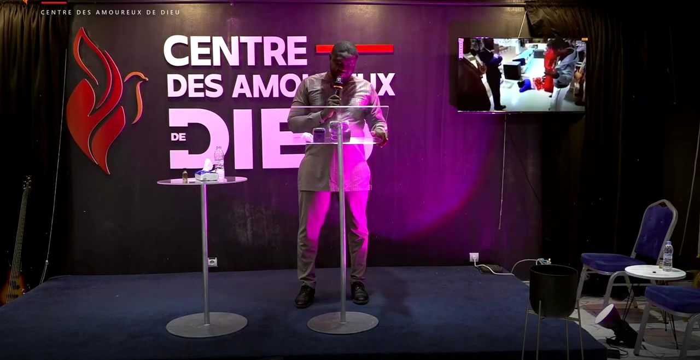
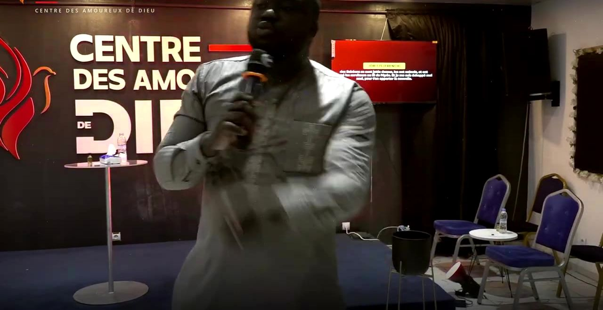
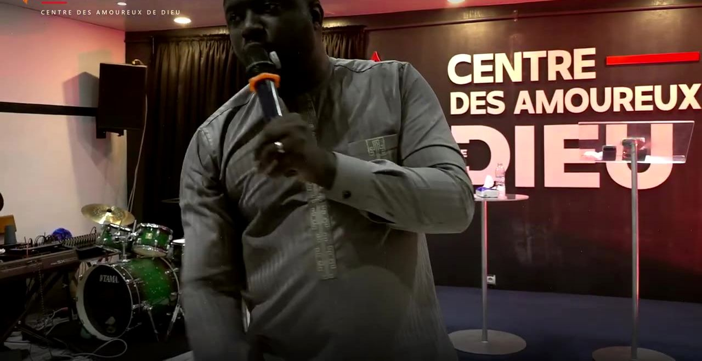
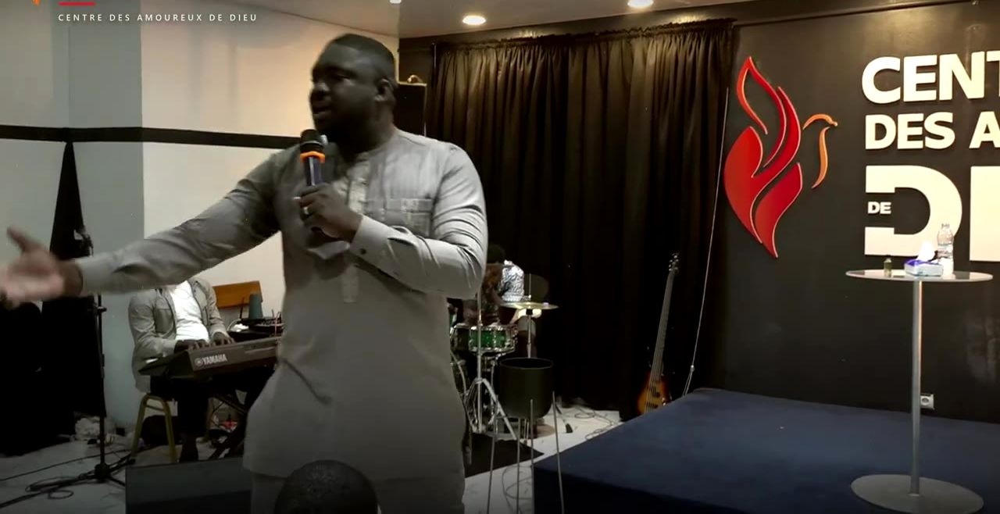
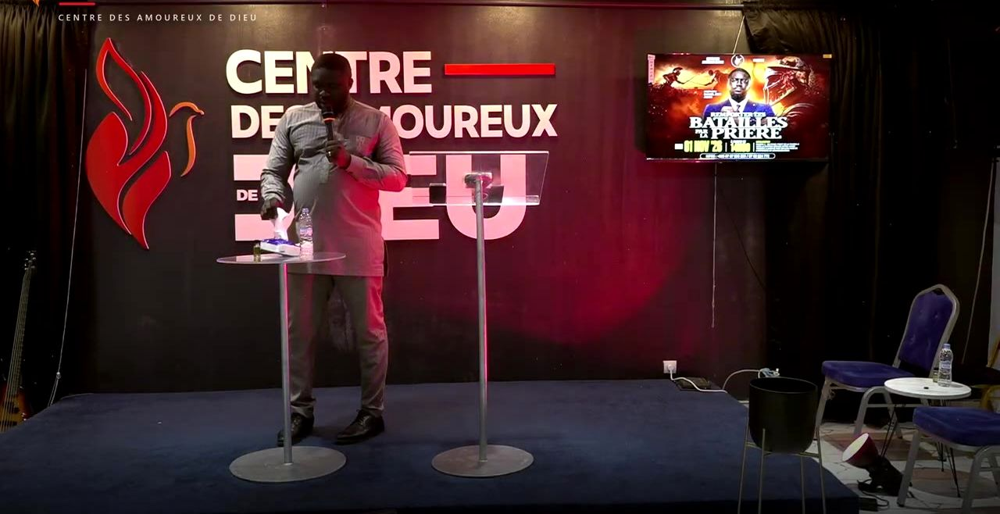

Cultes, affiches et prédications du Centre des Amoureux de Dieu.





Culte, 1er novembre 2026
Exhortation, 17 octobre 2026
Enseignement, 16 octobre 2026
Enseignement, 12 octobre 2026
Enseignement, 28 septembre 2026
Prière, 24 septembre 2026